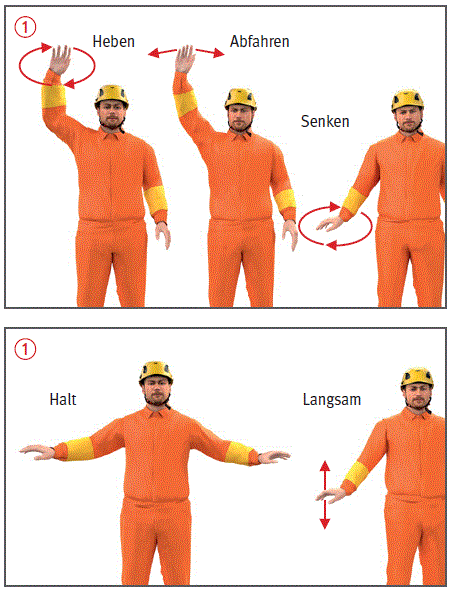
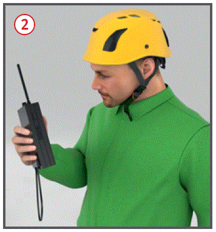
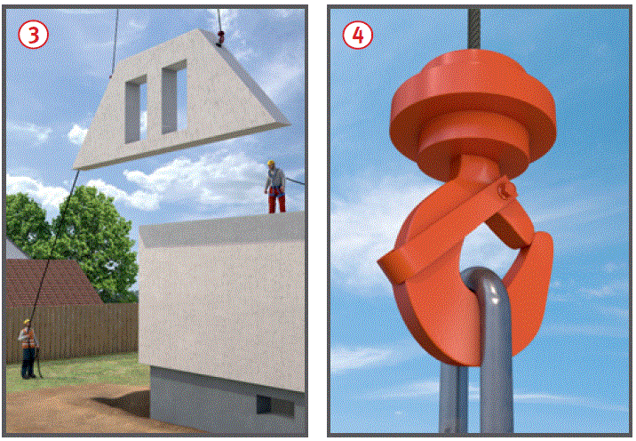
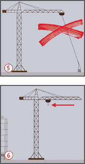

Gefährdungen
- Personen können durch herabfallende oder pendelnde Lasten gefährdet werden.
- Bedienungsfehler, klimatische Einflüsse (Wind, Blitz) oder Spannungsüberschläge bei Annäherung an elektr. Freileitungen können zu Unfällen führen.
Allgemeines
- Kran nur von unterwiesenen und am Kran eingewiesenen, mindestens 18 Jahre alten, körperlich und geistig geeigneten und vom Unternehmer schriftlich beauftragten Kranführern bedienen lassen.

Schutzmaßnahmen
- Nur sachgemäß angeschlagene und gesicherte Lasten anheben.
- Einweiser einsetzen, wenn der Kranführer die Last nicht beobachten kann.
- Verständigung zwischen Einweiser und Kranführer durch direkten Sichtkontakt mit festgelegten Handzeichen
 oder durch Sprechfunk
oder durch Sprechfunk  .
.
- Können Lasten bei Wind nicht mehr kontrolliert gehoben werden, ist der Kranbetrieb einzustellen.
- Sicherheitsabstand zu elektrischen Freileitungen einhalten.
- Besondere Maßnahmen im Bereich von Bahnanlagen einhalten.
- Der Kranbetrieb ist bei Unwetter (starker Wind oder Sturm und Gewitter) einzustellen.
- Bei Überschneidung von Arbeitsbereichen mehrerer Krane für einwandfreie Verständigung der Kranführer z. B. durch Sprechfunk untereinander sorgen, Vorfahrtsregelungen und Arbeitsabläufe festlegen.
- Lange Lasten, die sich beim Transport verfangen können oder die positioniert werden müssen, mit Leitseilen führen
 .
.
- Das Heben von Personen mit Kranen ist nur im begründeten Ausnahmefall nach den Vorgaben der TRBS 2121 Teil 4 und der DGUV Regel 101-005 zulässig.
- Diese Personenbeförderung ist mind. 14 Tage vorher bei der Berufsgenossenschaft schriftlich anzuzeigen.
- Maßnahmen zur Rettung des Kranführers aus Krankabine festlegen.

Zusätzliche Hinweise für Betonkübel mit Standplatz
- Einsatz nach durchgeführter Gefährdungsbeurteilung nur im begründeten Ausnahmefall zulässig.
- Es sind die zusätzlichen Vorgaben zu den technischen Maßnahmen am Kran und am PAM sowie zur Prüfung einzuhalten (siehe unter "Weitere Informationen").

Zusätzliche Hinweise zu den Pflichten des Kranführers
- Täglich vor Arbeitsbeginn Funktionsprüfung sämtlicher Notendschalter und Bremsen sowie Sichtkontrolle der Abstützungen bzw. der Gleisanlage.
- Funktion der Hakensicherung am Kranhaken täglich überprüfen
 .
.
- Seile regelmäßig pflegen sowie auf Seilschäden hin kontrollieren.
- Krankontrollbuch führen, festgestellte Mängel und Kontrollen eintragen. Die Mängel melden und deren Beseitigung verlangen.
- Notendschalter nicht betriebsmäßig anfahren.
- Keine Personen mit der Last oder dem Lastaufnahmemittel befördern.
- Lasten nicht schrägziehen und pendeln, festsitzende Lasten nicht losreißen
 .
.
- Lasten nicht am unbesetzten Kran hängen lassen.
- Kranbetrieb einstellen, wenn die Last bei Windeinwirkung nicht sicher gehalten und abgenommen werden kann oder wenn Mängel auftreten, die die Betriebssicherheit gefährden.
- Gleisbetriebene Krane nach Arbeitsende mit Schienenzangen festsetzen.
- Kran nach Vorgaben des Herstellers in Feierabendstellung bringen
 . Im Kranhaken ist dabei keine Last oder Lastaufnahmemittel eingehangen.
. Im Kranhaken ist dabei keine Last oder Lastaufnahmemittel eingehangen.
Prüfungen
- Art, Umfang und Fristen erforderlicher Prüfungen ermitteln und diese veranlassen, z. B.:
- täglich vor Arbeitsbeginn Funktionsprüfung sämtlicher Notendschalter durch den Kranführer,
- nach jedem erneuten Aufstellen, Umrüsten und nach Bedarf, mindestens jedoch jährlich durch eine "zur Prüfung befähigte Person" (z. B. Sachkundiger),
- nach wesentlichen Änderungen und sonst regelmäßig nach folgenden Betriebsjahren durch einen ermächtigten Sachverständigen: 4, 8, 12, 14, 16, 17, 18, … weiter jährlich.
- Auch Prüfhinweise in Betriebsanleitungen der Hersteller beachten.
- Ergebnisse der regelmäßigen Prüfungen dokumentieren.
Arbeitsmedizinische Vorsorge
- Arbeitsmedizinische Vorsorge für den Kranführer nach Ergebnis der Gefährdungsbeurteilung veranlassen (Pflichtvorsorge) oder anbieten (Angebotsvorsorge). Hierzu Beratung durch den Betriebsarzt.
07/2021